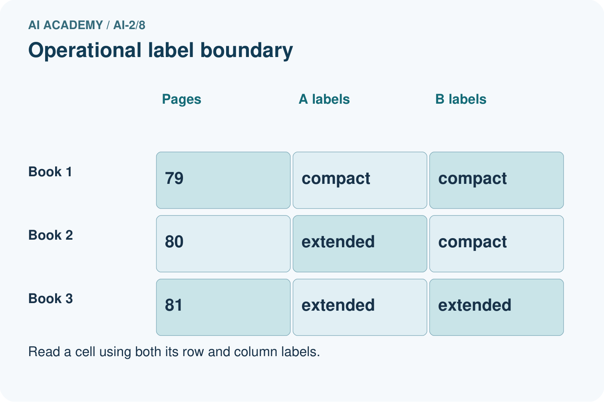
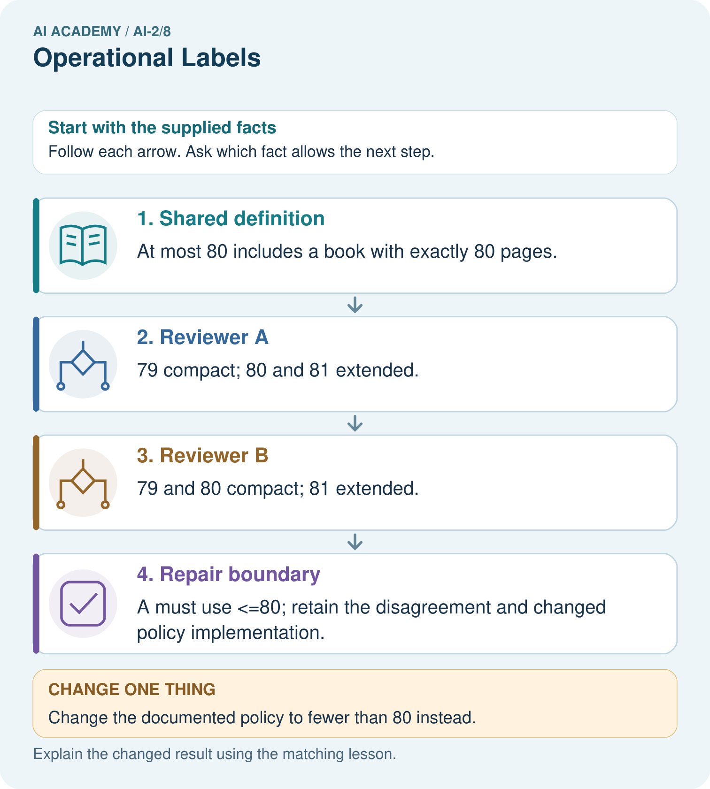

AI Academy · Level 2 · Grade 7 · Week 8 · Workbook
Operational Labels
Learn to understand, design, build, test and explain AI systems responsibly.
Project: Transparent Book Recommender
Workbook · 1 of 20
Recall and choose your starting point
Try the recall before opening notes. Then use a different colour or a labelled second line to correct your explanation.
Rows Columns and Data Types
Without opening the old lesson, explain one key idea from Rows Columns and Data Types. Give an example and a mistake that the idea helps you avoid.
Loops and Stopping
Without opening the old lesson, explain one key idea from Loops and Stopping. Give an example and a mistake that the idea helps you avoid.
Decompose a Goal
Without opening the old lesson, explain one key idea from Decompose a Goal. Give an example and a mistake that the idea helps you avoid.
Workbook · 2 of 20
Practise with fading help
Use W2: Replace a vague instruction for Categories and operational labels. Record the answer once; the lesson and workbook refer to the same attempt.
| Given inputs | Procedure I chose | Middle steps | Result and check |
|---|---|---|---|
Workbook · 3 of 20
Individual reasoning check
Use the worked case for Categories and operational labels. Proposed explanation: “A blank is the same as a failing value”. Decide whether this explanation is supported. Point to the step or supplied fact that decides; explain your repair if needed.
Workbook · 4 of 20
Independent transfer case
Independent case: Changed independent case
Two labellers use book-length rules: fewer than 120 pages and at most 120 pages. Label books with 110,120,121 pages. The agreed policy is at most 120. Repair the disagreement.
Attempt this case before feedback. Record any help. Earlier examples below are further practice; a case already practised with feedback cannot establish fresh transfer.
Workbook · 5 of 20
Your learning target
Two labelers use 'short' to mean pages<100 and pages<=100. They disagree only on 100-page books. Write a shared definition and explain how to repair the existing labels.
Workbook · 6 of 20
Solve the given case
Short means fewer than 100 pages. Two annotators disagree about a 100-page book.
Resolve the label.
Show your trace, calculation or evidence
Workbook · 7 of 20
Check a changed case
Use a clear label rule: short means 80 pages or fewer. Two judges label an 80-page book differently. What shared instruction resolves this disagreement?
My independent answer and reason
Week 8 Test and reflect
Workbook · 8 of 20
Design a revealing test
Create a changed input, boundary case or missing-information case. Write the expected answer or safe response before testing.
| Test record | My evidence |
|---|---|
| Changed input or condition | |
| Expected answer or fallback | |
| Observed result | |
| Why the result occurred |
Workbook · 9 of 20
Project checkpoint
Define ‘good match’ before training or evaluating the recommender.
The project change and evidence I will keep
Workbook · 10 of 20
Self check
I can explain the mechanism. I can show evidence. I can handle a changed case. I can name a limit. Mark each as not yet, with help or independently, and attach supporting work.
Teacher review ____________________ Next step ____________________
Workbook · 11 of 20
Transfer practice from the original programme
Two labelers use 'short' to mean pages<100 and pages<=100. They disagree only on 100-page books. Write a shared definition and explain how to repair the existing labels.
Record support used: none, hint or teacher explanation.
Workbook · 12 of 20
W1 Apply the calendar guide
The calendar policy accepts whole-number days 1 through 30 inclusive and a room code A or B. Check known failures first, then unknown fields, then readiness. Label these cards and give evidence: day 30 room B; day 31 room A; day 14 room unreadable; day 31 room unreadable.
Workbook · 13 of 20
W2 Replace a vague instruction
A helper says Label a card ready if it looks nice. Explain why this can lead to inconsistent labels. Replace it with an instruction that another person can apply using the calendar policy, including what to do about a blank field.
Workbook · 14 of 20
W3 Count and investigate disagreement
For the same four cards, Mina records ready, revise, review, ready. Theo records ready, review, review, revise. How many positions agree? Identify the disagreements. Can you decide which annotator is correct from these label lists alone? Explain what else you need.
Workbook · 15 of 20
W4 Transfer the method to a new record
A fictional equipment-request form accepts a whole-number borrowing duration of 1 through 7 days inclusive and one item code X or Y. Label revise if any known field fails; otherwise label review if a field is blank or unreadable; otherwise label ready. Classify these forms and justify each: 7 days X; 8 days Y; unreadable duration X; 8 days blank code. Explain whether ready alone grants permission to borrow.
Workbook · 16 of 20
W5 Keep a policy change visible
Version 1 accepts calendar days 1 through 30. Version 2 accepts days 1 through 31. A card says day 31 room A. State its label under each version. Explain why mixing the two labels without recording the version could create a misleading training dataset.
Workbook · 17 of 20
Feedback, return check and learning record
| Evidence | My record |
|---|---|
| Worked alone / hint / model | |
| First step I repaired and why | |
| New case checked later; date and result | |
| What I can now explain without notes | |
| One remaining question |
Revisit this idea with your teacher after a delay. Familiarity is different from explaining and using it on a changed case.
Workbook · 18 of 20
Pictorial case practice: Operational Labels
Two fictional catalogue reviewers label books compact or extended.
Agreed policy: compact means at most 80 pages; extended means more than 80.
Reviewer A uses pages<80; reviewer B uses pages<=80. Inspect books of 79,80,81 pages.


Why can we not resolve the disagreement merely by taking a majority of reviewers?
Support used: alone / hint / worked example. This record is practice evidence.
Project connection: Give Transparent Book Recommender metadata labels explicit definitions and boundary examples for reviewers.
Workbook · 19 of 20
Project portfolio milestone
Project: Transparent Book Recommender
Current milestone: Make a transparent first version. Keep a trace of how one input becomes an output; explain the rule or learned component.
Give Transparent Book Recommender metadata labels explicit definitions and boundary examples for reviewers.
| Evidence to keep | My record |
|---|---|
| This week’s input and deciding step | |
| Prediction and actual result (or labelled paper trace) | |
| One change since the previous checkpoint and why | |
| One error or limit and the next test |
Workbook · 20 of 20
Supported practice and learning evidence
Use this supported practice once, in the browser or on paper. Keep the reserved independent assessment for a separate first attempt before teacher feedback.
Two fictional catalogue reviewers label books compact or extended.
Practice 1: explain the deciding evidence
Which labelled step matches this detail? A must use <=80; retain the disagreement and changed policy implementation.
1. Repair boundary
2. Reviewer B
3. Reviewer A
4. Shared definition
Hint if needed: Read the steps in the pictorial case. Match the supplied detail to the stage that performs or records it.
After your attempt, compare with the supported explanation: Repair boundary A must use <=80; retain the disagreement and changed policy implementation. The reviewers agree on two of three examples, but that fraction does not decide which definition to keep. The documented policy decides the equality case. Repairing A’s implementation aligns its labels with the agreed meaning. Rechecking 79 and 81 ensures the boundary fix preserves adjacent decisions.
Practice 2: explain the deciding evidence
Changed-case practice: Change the documented policy to fewer than 80 instead. Which conclusion is supported by the supplied facts?
1. A’s original labels now match; B must change its equality behavior.
2. We can decide the result without examining the changed input or the procedure.
3. This one example guarantees correct results for every future input.
Hint if needed: Use the changed condition and the deciding step in the pictorial trace. The answer must say what follows from those facts.
After your attempt, compare with the supported explanation: A’s original labels now match; B must change its equality behavior. The authoritative definition changed, not the physical books.
Repair a missing building block
Review Rows Columns and Data Types (ai-2/7). Goal: Specify a table schema. Short practice: Which two rows originally fail, and do they fail for the same reason?. Return to this week and explain what you changed.
Review Loops and Stopping (ai-2/5). Goal: Trace variable values before and after each loop iteration. Short practice: Why is report 0 correct for the original loop, and why is equality-only stopping risky here?. Return to this week and explain what you changed.
Review Decompose a Goal (ai-2/2). Goal: Distinguish a function definition from a function call. Short practice: What happens visibly if the caller stores needed but omits print(needed)?. Return to this week and explain what you changed.
Keep your completed work
Use Download completed work in the hosted lesson to export your answers, reflections, practice feedback and code-run evidence. Open the HTML copy to read or print it. Drafts stay in this browser when storage is available; clear drafts on a shared device.